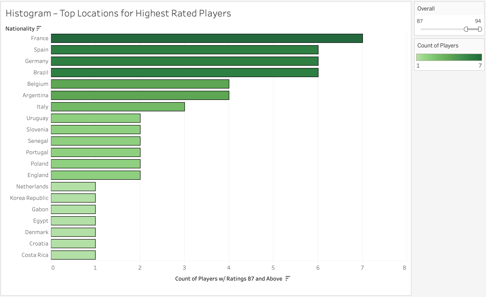
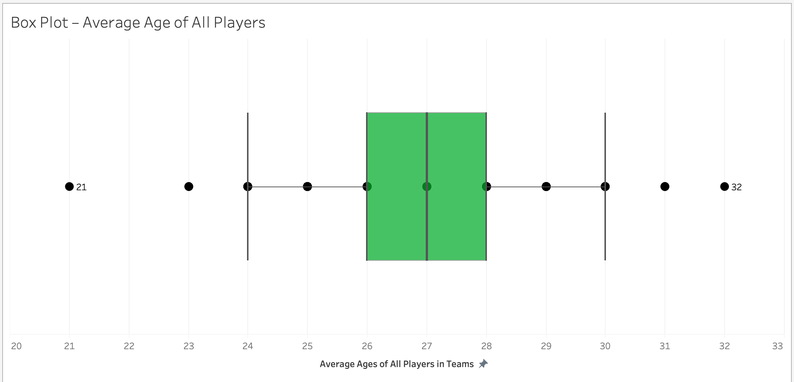
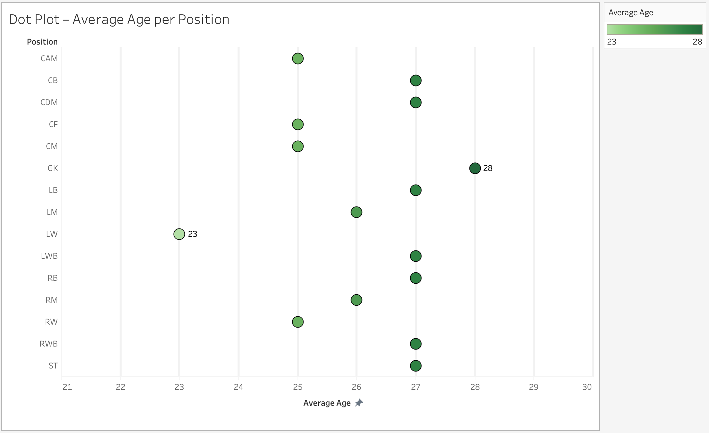

FIFAViz ALPHA-RELEASE
CARLOS PORTILLO
MOTIVATION
My motivation for choosing this project is that I have deeply enjoyed playing soccer and FIFA throughout my life. I've spent countless hours either on the pitch playing with teammates and on the sticks with my friends on Xbox. I know that I will enjoy making graphs, learning, and teaching what I find with this dataset.
OVERVIEW
The objective of this project is to give light to the few factors that we can see in this dataset which are a player's age,
club, and country that they are from. From experience of just watching and playing soccer and FIFA for about 15 years now,
I've seen common trends where once a player gets above let's say the age of 30-32, they tend to be in clubs that are not as
popular, or even retire, etc. I always wanted to know things like which countries were best known for creating the top players
in soccer as well as what age a typical player would be on a team. A person's age and position they play are significant factors
on a player's body and determine how best they can play during games as well as how long they will be able to play. For example,
one extraordinary goalkeeper by the name of Gianluigi Buffon has been able to play at the highest level for 20+ years. Now, some
people say that it is only because he plays goalkeeper that he is able to play for the long but I believe it's still tough to be
on your toes playing against people who are a bit more agile and might be a bit more snappy than you are on your feet. However,
there are players like Cristiano Ronaldo who have been playing for many years at the highest level at the forward position. There
has been a decline in his skillset and we can see that with his misplayed passes, missed goal opportunities, etc. However, his body
is still strong and he remains sharp.



FEATURES/CHALLENGES
So far, I think I've got a good amount setup for my project. I've got a rough
sketch of the graphs in Tableau that I'm going to want to mirror in D3 which is
a good help. I had some sketches in my proposal but actually having the visualization
on my page gives me an idea of what I need to work on. I'm not entirely sure how I'd
want to position my graphs and would love some feedback on how best to display my graphs.
I'm going to have one more graph, but the one I had thought about initially didn't really
show me anything insightful when I created it in Tableau with the data, so I'm going to have
to figure out something else for that. Other than this, I soon will be working on the
visualizations in D3 and add interaction as well.
TASKS/MILESTONES
- Create histogram in D3 (OBJ#1) (4/15) --> To see where the best players come from
- Figure out which chart for OBJ#3 in D3 and create it (4/15) --> compare a player's age to their rating
- Create dot plot (OBJ#4) (4/16) --> To see the average age per position
- Create box plot (OBJ#2) (4/16) --> To see average age of players on teams